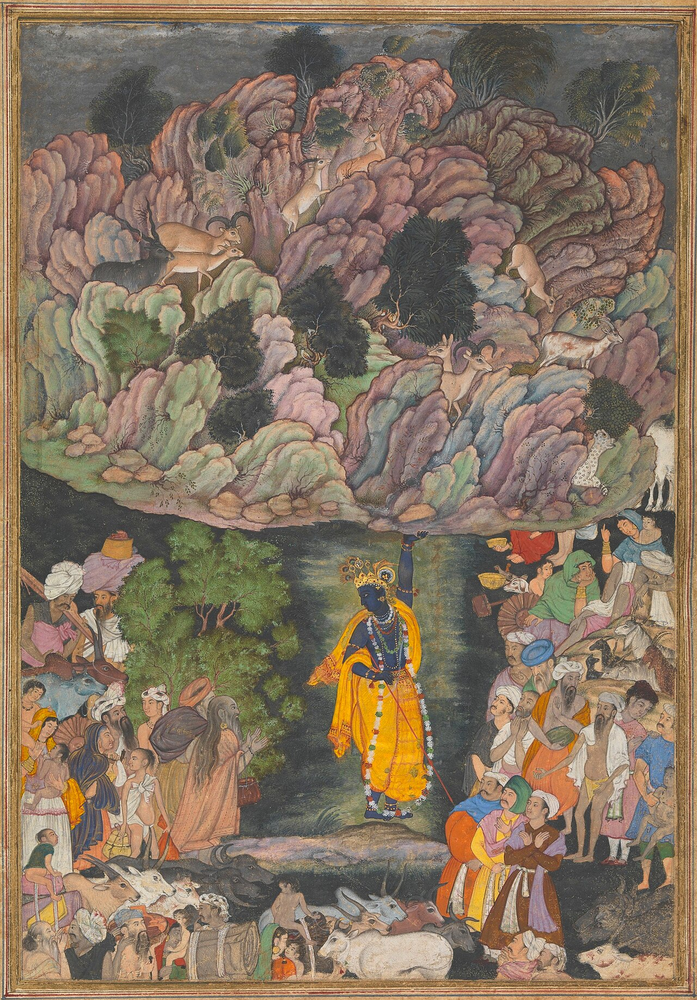

Krishna–Govardhan
The lifted hill is both miracle and metaphor: divine care that shelters the humble.

गोवर्धन पूजा
The day after Diwali — annakut mountains of food, and Krishna lifting the hill of care.
गोवर्धन पूजा/अन्नकूट दीपावली के बाद — अन्न का पर्वत और इंद्र के गर्जन से ब्रज की रक्षा की कृष्ण कथा।
Govardhan Puja (Annakut) follows Diwali in many North Indian and Pushtimarg calendars. Devotees prepare vast vegetarian offerings shaped like a mountain and remember Krishna protecting Braj from Indra’s storm.
ब्रज जब इंद्र यज्ञ करता, बाल कृष्ण ने पूछा — गोवर्धन क्यों न पूजें जो गौओं को पालता है? इंद्र का अहंकार वर्षा बना; कृष्ण ने सात दिन गोवर्धन उठाया। कथा भूमि–प्रेम की ओर मोड़ती है।
When Braj worshipped Indra for rain, young Krishna asked why they ignored Govardhan — the hill that fed their cows. They offered to the hill instead. Indra’s pride sent floods; Krishna lifted Govardhan on a finger for seven days as umbrella. The myth turns theology toward ecological devotion: protect the land that protects you.
वैष्णव घर अन्नकूट सजाते हैं — परिक्रमा और सामुदायिक प्रसाद। विदेश में फल–चावल का छोटा गोवर्धन बनता है।
Vaishnava homes build annakut — trays of grains, sweets, and vegetables. The ‘mountain’ is circumambulated; leftovers become community prasad. Abroad, temples recreate miniature Govardhan with fruit and rice.
The lifted hill is both miracle and metaphor: divine care that shelters the humble.
Rain without gratitude becomes violence; the myth corrects transactional religion.
विदेशी हवेली और इस्कॉन मंदिर दीपावली के अगले दिन भव्य अन्नकूट लगाते हैं — खोज और सोशल दोनों में लोकप्रिय।
Haveli and ISKCON temples abroad stage dramatic annakut displays the day after Diwali — a major Instagram and search moment for ‘Annakut 2026’ style queries.
Save this festival to My Board to track ticks there.
The day after Diwali — annakut mountains of food, and Krishna lifting the hill of care.
Prepare annakut / chappan bhog as means allow Read the Govardhan story; offer to Krishna and share prasad Circumambulate the food-hill or a symbolic mound Thank farmers, cattle, and the ‘hills’ that feed your city
Vaishnava homes build annakut — trays of grains, sweets, and vegetables. The ‘mountain’ is circumambulated; leftovers become community prasad. Abroad, temples recreate miniature Govardhan with fruit and rice.
Help us validate this page: suggest a correction, add a detail, or highlight something useful for home puja readers.
Feedback is emailed to TirthaYatra for editorial review. It is not published live automatically (safer for quality and ads policy). You can also keep a personal copy on this device.